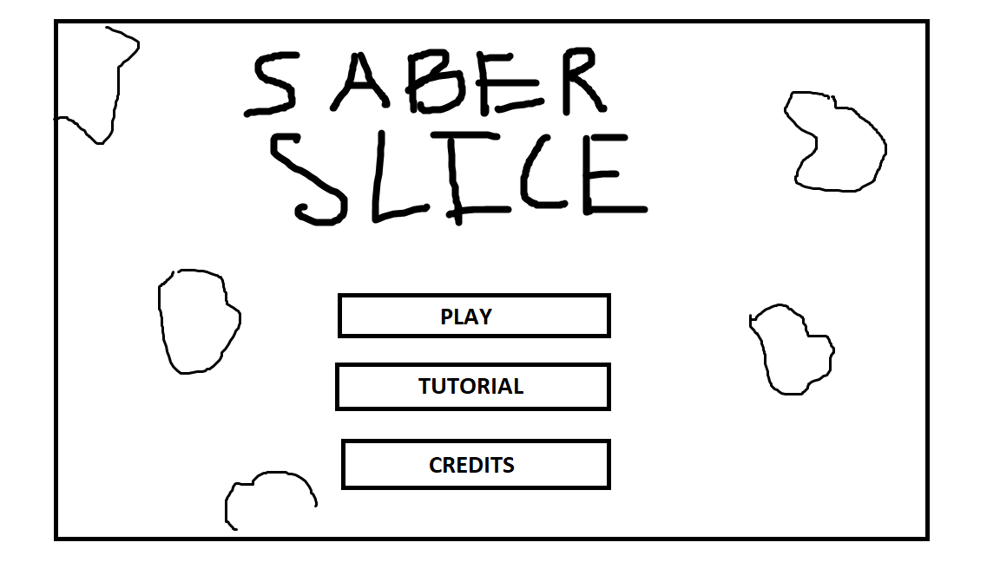
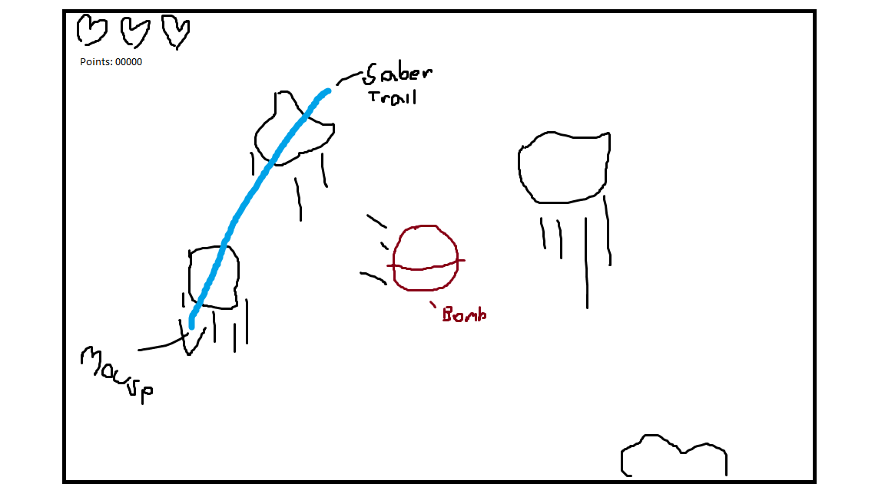

Based on the classic mobile game, Fruit Ninja, this game replicates a similar gameplay loop, however at a much smaller scale. Themed around a sci-fi star wars theme, as the player you will slice objects as they fly up from the bottom of the screen to score points. Unlike Fruit Ninja, some objects (safe and dangerous) will be flying, not simply affected by gravity, adding a whole new aspect of what to look out for while playing. The player will need to be careful to not hit any dangerous thermal detinators (bombs), as they will cause you to lose a life and points. Once you lose all 3 lives, the game ends, and you can replay to attempt to get a new high score.
Genre Types: Action, Simulation, Casual
This game will be sci-fi themed, specifically styled around Star Wars. For example, the player will use a lightsaber to slice through objects like butter. I may also add a slight eastern flair, some kind of samurai asthetic that is reminiscent of Star Wars origins as well as the original game I'm basing upon.
Desktop Only, if I have time I may add mobile compatability.
In this game you are a young jedi training your lightsaber skills by practicing swinging at various practice objects. Some of these are clearly more dangerous than others, so you better make sure you don't mess up!
Visual: Cartoony/Pixel Art esthetic.
Sound: Sci-Fi/Techno, Classic 80's movie sounds
Noises will be used for general ambiance, the lightsaber hum + swinging, as well as the clashing noise with objects.
This game only uses mouse control. Player begins swinging their blade by holding left click and dragging their mouse. The blade will only cut if the mouse is moving at a certain speed. If the mouse passes over a object, the object will break and reward points. If the object is a dangerous object, the player will lose a life and points. Once 3 lives are lost the game is over.
For those who have played fruit ninja, the game is pretty easy to understand. Those new however can easily understand the game given a simple diagram that describes how to play.
The player may need to learn more efficient strategies to optimize point gain, while avoiding dangerous objects as the game progresses. A novice may wildly swing their blade, while a master is precise in their slashes.
Main menu sketch.

Gameplay sketch.

May utilize some kind of data storage if I have extra time. Will probably include changing your lightsaber color.
Name: Noah Kasper
Major: Game Design and Development
Year: Sophomore
Skills/Interests: Programming, 3D Modeling (Blender/Maya/Substance), Game Design, Graphic Design, UI Design
As I began work on my prototype, I wanted to crank out the fundamental mechanics of the game, more than the visual design.
I used PIXI.Point, to simulate vector math and create some basic 2D gravity.
I created a mechanism to track mouse speed, which calculates the magnitude of the change of mouse positions.
Using this mouse speed, I was able to track if the player is "slashing", to give it a more fruit ninja feel I was going for.
As I neared the end of my prototype, I realized I am going a bit ambitious here, and realized I would need to shrink my scope, making my game more into a dumb downed version of fruit ninja.
Moving into progress on the final project, I set up a trail effect using a online resource I found. A lot of it was broken, so I had to reverse engineer some things and find updated versions of the PIXI addons they used.
Decided I'd just go to a full screen game, instead of having a small box on a web page. A lot of students were complaining about their mouse too easily flying out the clickable area, so making it as big as the window should help with this
Implemented bombs that clear the board when hit. Tried to create some kind of fading white flash bang effect, but I couldn't figure it out and just decided to scrap it.
Create a more unique object to hit, this object has to be hit multiple times in rapid succession, for it to finally break and reward a large amount of points.
Set up all states, and actually made a end screen.
Set up rotation of objects so they are not so static as they fly up the screen
Added audio effects to some of my game interactions
Nearing the end I wanted to try to add some kind of background. For some reason, it messed with the particle container and made it hidden what seemed no matter what. All sprites would be placed above the background as intended, but the particles just wouldn't so I had to scrap that. The black background works fine I suppose as the space background I wanted.
Set up delta time timers, that creates a gameplay flow with sectioned levels, and object spawn rates.
Cleaned up any final bugs, and made sure the functionality is where I wanted.
Stack Overflow (various debugging and code help with javascript and pixijs)
Mozilla (more debugging and code help)
PixiJS (syntax help)
PixiJS particle trail
Help with general HTML5 game development using pixi
Droid sprites
Google (Random images)
Try seeing how moving your mouse at slow speeds, doesn't allow for a collision (may not work perfectly, current threshold is pretty low just incase of computer differences)
Test out the audio with igniting on and off your lightsaber (clicking and unclicking)
Includes 3 ES6 classes
My HTML and CSS consist of like nothing, since my game is full screen. So yes they are valid.
No errors
Images are optimzied
Providing documentation
Hoping a few hours late is fine
Originally used same index file for prototype, hope that is fine.
Code is formatted, commented, and seperated
No errors or unneccesary output, just a progress loader which we used in circle blast.